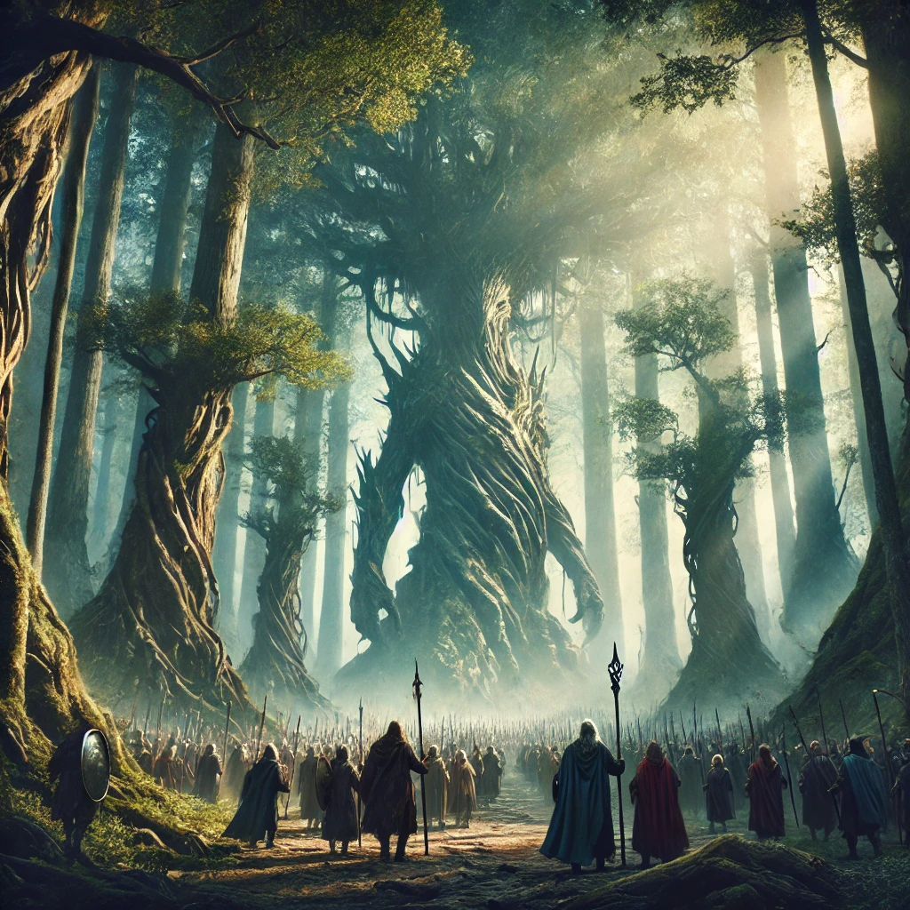
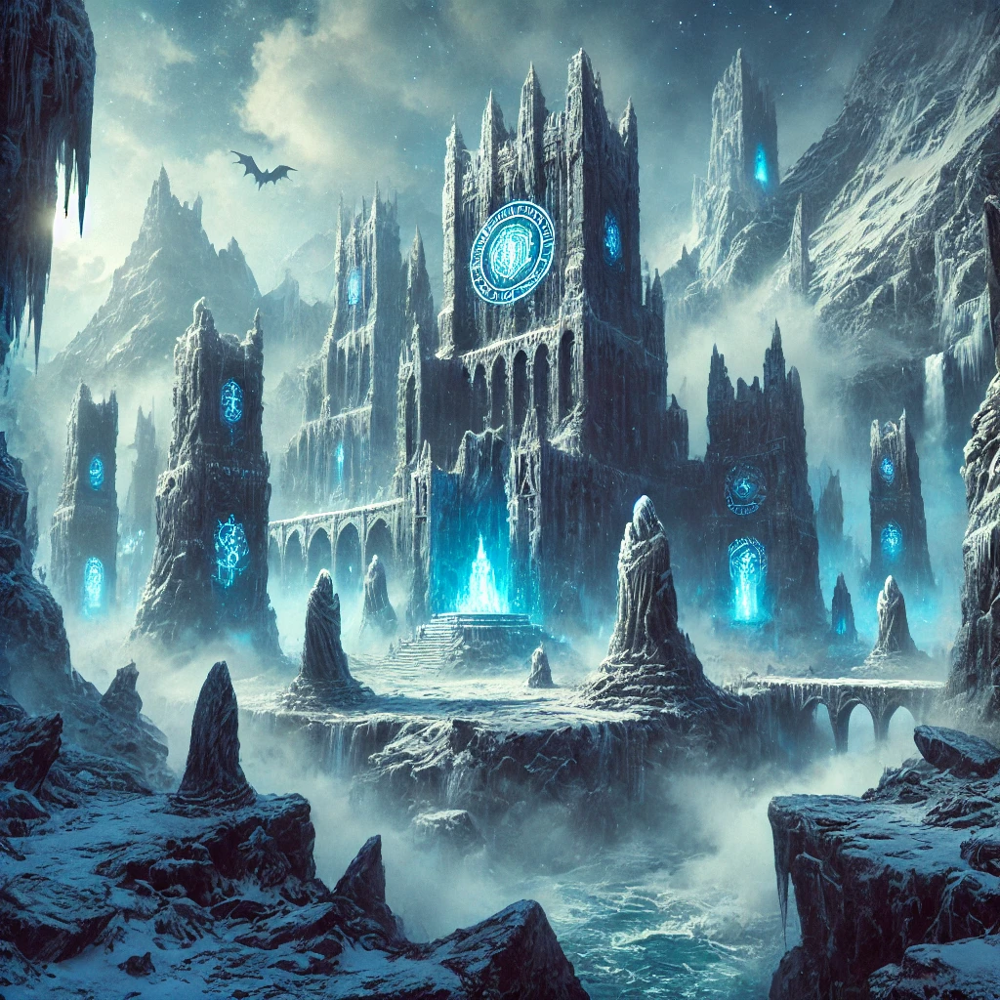

Bienvenido al Blog de la Tierra Media
Descubre historias, leyendas y aventuras de la Tierra Media.
Categorías
Leyendas Antiguas
Exploraciones
Historias de Enanos
Aventuras

La Última Marcha de los Ents
Los Ents, guardianes de los bosques...
Publicado el 10 de noviembre de 2024 por Galadwen...
Leer más

El Secreto de las Ruinas de Angmar
Explora las ruinas de Angmar y descubre los secretos que guardan, desde inscripciones mágicas hasta amenazas espectrales.
Publicado el 12 de noviembre de 2024 por Eäredhel el Sabio
Leer más
Relatos de las Ciudades Bajo Tierra
Descubre la majestuosidad de las ciudades enanas subterráneas, con relatos de resistencia y cultura antigua.
Publicado el 14 de noviembre de 2024 por Tharil del Clan de la Roca
Leer más